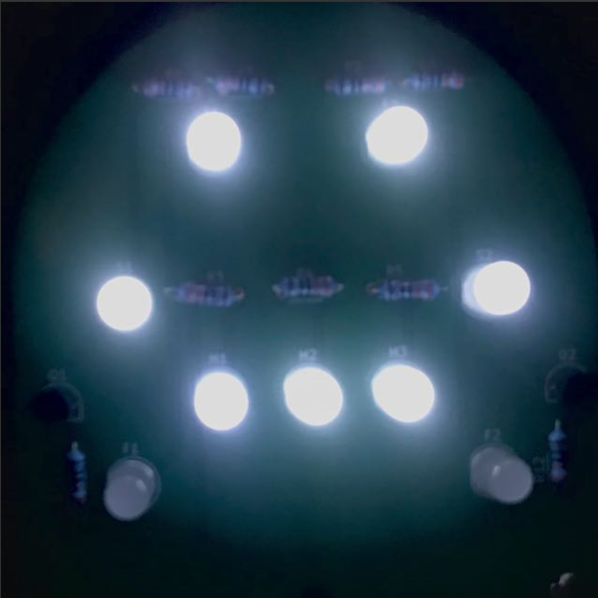

About
Hi, I'm Omar Gaad. I'm an aspiring Computer Engineer whose interested in using both Hardware and Software to bring my ideas to life and solve problems.
To build up my skill set and explore different areas in the field, I've made a few fun projects, I hope you'll enjoy.
Projects
- Type: Software
- Description: A Mobile and Desktop App for the social deduction game Mafia where the host is automated.
- Progress: Developing 🛠️
Mafia
- Type: Integrated
- Description: An electronic music box that allows user to pick songs to play on a buzzer e.g Tetris or Mario Theme
- Progress: Developing 🛠️
Box of Marvellous Beats (BoMB)

- Type: Hardware
- Description: A simple circuit the starts of frowny :( but when you push a button, it smiles :)
- Progress: Complete ✅
Smiley PCB

- Type: Software
- Description: A Website to calculate someone's Forehead Mass Index (FMI). It's like BMI but for Foreheads.
- Progress: Complete ✅
Forehead Mass Index (FMI)
Skills
- HTML
- CSS
- JavaScript
- Python
- C++
- GitHub
Software
- PCB Design
- Soldering
- Electronic Components
- Schematics
- Multimeter
- Microcontrollers
Hardware
- Problem Solving
- Creativity
- Organisation
- Time Management
- Resilience
- Innovation